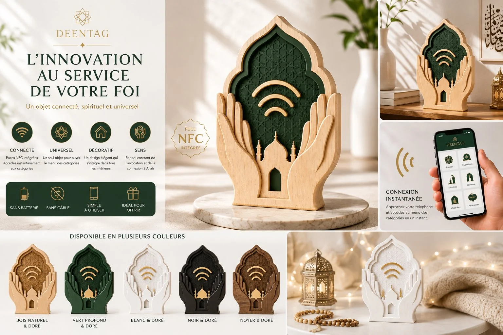

☀
⟡
Bienvenue dans le jardin
Glisse vers la droite pour avancer sur le chemin.
⟶
La Fontaine
L'Arbre
Le Banc
Le Coin des Enfants

Le Pavillon
Continuer
🌿 Entrée
💧 La Fontaine
🌳 L'Arbre
🪑 Le Banc
🧒 Coin des Enfants
🏮 Le Pavillon

 Le Banc
Le Banc
 Le Banc
Le Banc